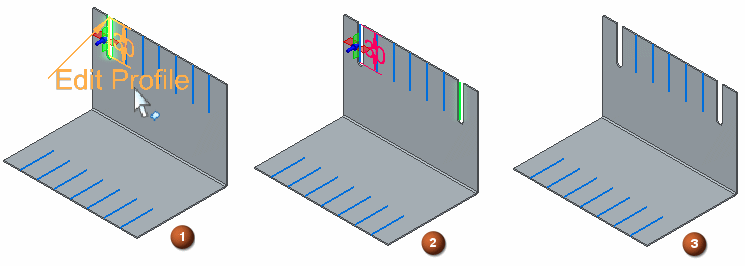

Slot command bar (synchronous environment)
- Options
-
Displays the Slot Options dialog box.
- Saved Settings
- Extent Step
-
Defines the depth of the feature or the distance to extend the profile to construct the feature.
- Through All
-
Sets the feature extent so that the slot is extended through all faces of the part, starting at the profile plane. You can extend the slot in a single direction.
The Move to Synchronous command for slot features converts slots with Through All extent types with a both directions direction type as face sets since synchronous slots do not support both directions direction type.
- Through Next
-
Sets the feature extent so that the slot is extended through only the next face on the selected side. The next face is defined as the closest face where the slot forms a closed intersection with the part. You can extend the slot in a single direction.
The Move to Synchronous command for slot features converts slots with Through Next extent types with a both directions direction type as face sets since synchronous slots do not support both directions direction type.
- From/To Extent
-
Sets the feature extent so that the slot is extended from one face or reference plane to another. When locating the To face, only planar elements parallel to the From face can be located.
During creation of a Slot with this extent type, the extent type automatically converts based on whether or not the slot has a bottom (floor) face.
-
If the slot has a bottom face, the extent type remains From/To, but the To element is a face that is penetrated by the slot, which may not be the element located by the user as the To element. The To face is determined in the same manner as the To face is determined for a Finite slot that does not have a bottom face and is then converted to a From/To slot.
-
If a From/To slot does not have a bottom face, the extent type converts to a finite extent.
-
- Finite Extent
-
Sets the feature extent so that the slot is extended a finite distance to either side of the profile plane, or symmetrically to both sides of the profile plane. Type the distance into the edit value box.
- Options
-
Displays the Slot Options dialog box.
- More Slots
-
Adds more occurrences for the selected slot. To add more slot occurrences, click the edit handle for the slot (1), click the Add More button, click the path for the new slot (2), and click to place the new slot (3).

Note:You can add more slots one at a time or fence select multiple paths to create multiple slots at once.
- Keypoints
-
Sets the type of keypoint you can select to define a feature extent or to position a new reference plane. This allows you to define the feature extent or the location of the reference plane using a keypoint on other existing geometry. When you use a key point to define a finite extent, the key point is only used to define a finite distance. The extent will not be associative to the key point. The available keypoint options are specific to the command and workflow you use.

Selects the center and end points.

Selects any keypoint.

Selects an end point.

Selects the center point of a circle or arc.

Selects a midpoint.

Selects a tangency point on an analytic curved face such as a cylinder, sphere, torus, or cone.

Selects a silhouette point.

Selects an edit point on a curve.

Turns off the keypoint location.